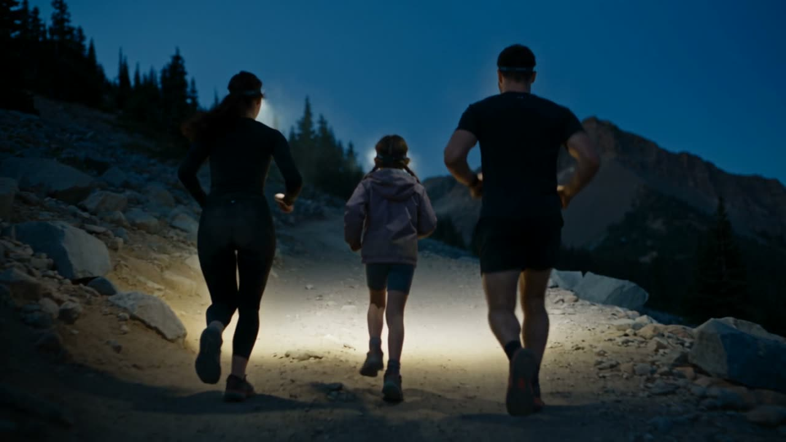

Free · a four-minute film
A grandmother’s instruction in Stone Breath, for the hour before the sun. You are not starting the day. You are entering state.
Stand when the film asks you to. It is not for the road.
Eight minutes, five counted rounds, no pictures. For the mornings you know it by heart.
Press play. Then stand still.
“The dawn is walking the land. Don’t let it find you asleep.”Stone Breath
You entered state.
Ancestral Peaks is the rest of the day: a guide for every hour, the Listening Room, the films from the books, and First Light, two minutes each weekday morning before the phone.